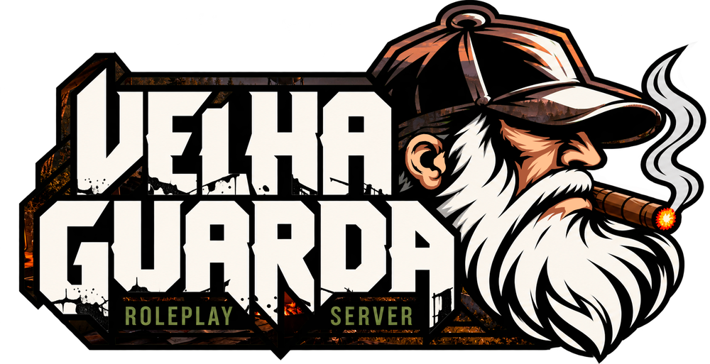

Zonas Tóxicas
Áreas tomadas por gás venenoso. Entre com proteção, ou não saia de lá.

Knox County caiu. Os mortos andam. Só os mais velhos lembram como se sobrevive.
O Velha Guarda é um servidor brasileiro de roleplay em Project Zomboid. Aqui cada jogador é um sobrevivente com passado, medos e escolhas, tentando continuar vivo num mundo que acabou.
Comida acaba, o inverno chega e a horda nunca para. Alianças se formam, traições acontecem, e cada decisão pesa. A administração acompanha de perto, cria eventos e mantém o mundo vivo.
Se você quer um apocalipse com clima, consequência e comunidade, seja bem-vindo à Velha Guarda.
Mods desenvolvidos pela própria equipe para deixar o apocalipse mais perigoso e o roleplay mais rico.
Áreas tomadas por gás venenoso. Entre com proteção, ou não saia de lá.
Regiões com tipos diferentes de infectados, que voltam a lotar as ruas com o tempo.
Tranque sua base com cadeados de código. Só entra quem sabe os números.
Algemas e abraçadeiras para render, prender e levar prisioneiros.
Quatro passos separam você do fim do mundo.
Avisos, suporte e a comunidade ficam lá. Acessar o Discord
Conheça as regras e a história do servidor antes de criar seu personagem.
Deixe o Project Zomboid na Build 42 pela Steam. Os mods baixam sozinhos ao conectar.
Em Entrar, adicione o servidor com o endereço:
Boletins da administração sobre atualizações, eventos e novidades do servidor.
Agora regras, lore e novidades ficam reunidas num só lugar. Salve nos favoritos e acompanhe por aqui.
Novas áreas contaminadas foram marcadas no mapa. Respirar ali sem proteção tem consequências.
Fiquem atentos ao Discord. Quando o rádio chiar, procurem abrigo e reforcem as barricadas.
Prints, bastidores, eventos e as melhores histórias dos sobreviventes. Marque a gente nas suas capturas de tela.
Seguir no Instagram